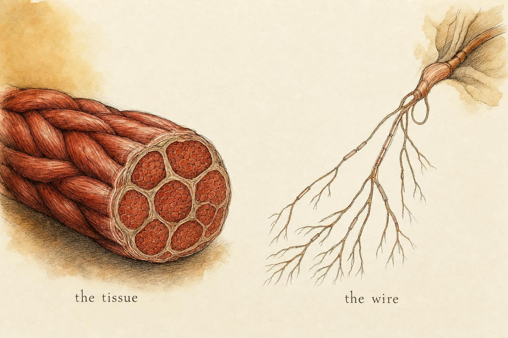
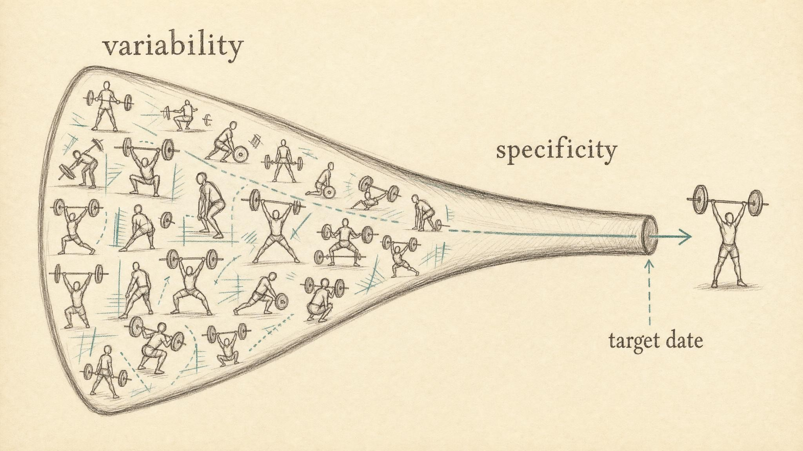

Programming for the Wire, Not Just the Tissue
Assembling recruitment, skill, fatigue, and priming into one coherent training logic.
Two learners finish an identical eight-week training block. Same exercises, same sets, same relative loads, the same careful attention to sleep and food. On paper, their tissue received the same stimulus. Yet on test day, one of them adds twelve kilograms to a lift she has trained for months, and the other adds nothing at all. Look at their muscle cross-sections and you can barely tell the difference. Whatever separated them was not built in the tissue. It was built in the wiring: how completely each of them could call on the muscle they already owned, how cleanly they could coordinate it, and whether the nervous system arrived on test day rested or buried under fatigue nobody had bothered to track.
This is the failure mode of programming that only manages tissue. It counts sets, monitors soreness, and adjusts volume, while quietly ignoring the system that actually converts a muscle into a performance. Priyanka, a learner who threads through this final chapter the way earlier learners have threaded through earlier ones, spent a full training cycle doing exactly this. She tracked every set, logged every repetition, iced her knees when they ached, and could not understand why her numbers stalled while a training partner on a lighter program kept climbing. The tissue was not her problem. The wire was. Her story is a thread, not a diagnosis, and we will use it only to make an abstract model concrete.
This final chapter is about programming for that wire on purpose. It is the capstone of everything this course has built: the motor unit as the smallest packet of force, the two dials of recruitment and rate coding that grade that force, the discovery that strength is partly a skill and not only a matter of bigger muscle, how a clumsy pattern becomes an automatic one, the sixth sense that tells the nervous system where the body is in space, the orchestra of coordinated timing that turns isolated force into athletic output, the difference between a tired brain and a tired muscle, and the deliberate, short-lived art of waking the system up right before it matters. None of those ideas is complete on its own. Programming is where they finally have to work together, in the same week, on the same learner, and the rest of this chapter is about how.
None of this is an argument that the tissue does not matter. A muscle still has to be built, fed, and given time to repair, and a program that ignored cross-sectional growth entirely would eventually run out of raw material no matter how skillfully the nervous system deployed it. The argument is narrower and more useful than that: tissue-only programming is incomplete, not wrong, and the missing half is exactly what most templates leave to chance. A learner who reads this chapter carefully is not being asked to abandon volume, hypertrophy work, or careful attention to recovery. They are being asked to add a second, equally deliberate layer on top of it.
The thesis, stated plainly
Everything in this course has pointed here. Strength is a skill expressed through tissue, not a property of tissue alone. Sale's (1988) foundational review made the case decades ago: strength performance depends on the nervous system's ability to activate muscle appropriately, not merely on how much muscle exists. Modern high-density surface electromyography (EMG) has since made this literal. Del Vecchio and colleagues (2019) tracked individual motor units across four weeks of training and watched discharge rates climb and recruitment thresholds fall before hypertrophy could plausibly explain the strength gain. The critical review by Škarabot and colleagues (2020) confirms the broad pattern while honestly flagging what remains contested about exactly where in the central nervous system (CNS) the change lives, whether at the motor cortex, the spinal motor neuron, the descending tract, or some combination the field has not yet fully mapped.
The practical inference is what matters to a learner sitting down to build a program. If a large share of early adaptation is neural, meaning recruitment, rate coding, coordination, and skill, then a program that only manipulates tissue-level variables such as volume, soreness, or the sensation of a muscular pump is programming with half the levers available. This chapter hands you the other half, and shows how the two halves have to be sequenced together rather than treated as separate concerns assigned to different days by different rules.
Restate the whole course as a single sentence and it reads like this: the tissue sets the raw ceiling of what force a muscle could theoretically produce, and the nervous system decides how much of that ceiling actually gets expressed on any given day, in any given pattern, at any given velocity. Train the tissue alone and you build a bigger engine that the driver never learns to use well. Train the wire alone and you build a driver with nothing left to drive. Programming for the wire, not just the tissue, means holding both variables in the same plan and being honest about which one is the real bottleneck at any given point in a cycle.

Same muscle, two levers: the tissue you can see and the wiring that decides how much of it you can use." data-image-idx="0" style="display:block;max-width:100%;max-height:75vh;height:auto;width:auto;margin:0 auto;cursor:pointer;">Lever one: programming intensity and intent for neural drive
Neural drive is built by asking the nervous system to produce force hard and fast, not merely often. Two variables govern it, and a program that manages only one of them is only half doing its job.
Intensity sets the ceiling of recruitment
High relative loads, broadly at or above 85 percent of a one-repetition maximum (1RM), force high-threshold motor units into play, the ones a moderate load never touches. This is the recruitment story from earlier in this course restated as a programming rule: if the biggest, fastest motor units are never invited to work, they are never trained. You cannot backfill high-threshold recruitment with more repetitions at a submaximal load. The size principle that governs which motor units switch on is not negotiable, and the ceiling it sets is a ceiling set by intensity, not by fatigue and not by total volume.
Intent sets the quality of drive at any load
Intent, the deliberate attempt to accelerate a given load as fast as possible, drives rate coding even when the bar itself moves slowly. A 60 percent load moved with genuine maximal intent produces a very different neural signature than the same load moved carelessly. This is why compensatory acceleration, the technique of pushing explosively against a submaximal load, and explicit cueing to move fast belong in a program built for the wire. They let a learner train discharge rate without always paying the joint and connective tissue tax that comes with truly maximal loads.
The programming tradeoff here is real, and pretending otherwise is how good cycles go stale. Maximal intensity and maximal intent both build neural drive, but they cost central fatigue at different rates. Heavy singles cost a great deal of central fatigue for a great deal of recruitment. Fast submaximal work costs less central fatigue for a strong rate-coding stimulus. A mature program uses both, deliberately, at different points in the cycle, rather than leaning on one to the exclusion of the other. Priyanka's stalled cycle, in hindsight, had plenty of intensity and almost no explicit intent work; every set she logged was heavy, slow, and grinding, and nothing in her plan ever asked her nervous system to simply move something fast.
Lever two: scheduling skill, variety, and specificity
Coordination and skill obey the rules of motor learning, not the rules of hypertrophy. Magill and Anderson (2017) give three scheduling principles that most strength programs violate by accident rather than by design.
Match practice to the learner's stage
The three stages of motor learning, cognitive, associative, and autonomous, should change how a program is built. A learner in the cognitive stage needs frequent, lower-load, high-feedback exposures to build the pattern; loading that learner heavy mostly rehearses errors under strain, wiring in the very faults a coach or a self-directed learner will later have to unwind. A learner in the autonomous stage needs the opposite: high specificity, competition-like conditions, and enough load and intent to express a skill they already own. Treating both stages the same way, which is the default in most generic templates, wastes the cognitive-stage learner's early weeks and under-challenges the autonomous learner's late ones.
A single example makes the mismatch concrete. Two learners are handed the same eight-week template for a new lift, one who has never performed the pattern and one who has drilled it for years. The template calls for heavy triples from week one. The experienced learner expresses an existing skill under load, which is exactly the right stimulus for their stage. The newer learner, with no reliable pattern yet, spends those same triples rehearsing whatever compensation their body improvises under strain, and by week four has practiced a flawed version of the lift far more than a correct one. The load was identical. The outcome was not, because the program never asked which stage of learning it was actually training for.
Variability builds the skill; specificity expresses it
Variability of practice, meaning deliberate changes to stance, tempo, bar, angle, and general contextual interference, builds a more transferable and robust motor program (Magill & Anderson, 2017). But specificity of practice is the necessary counterweight: the skill must ultimately be rehearsed in the exact context in which it will be tested. This mirrors an older idea in exercise science, sometimes shortened to specific adaptation to imposed demands, which simply states that the body adapts most precisely to the exact stress it is repeatedly asked to handle. The programming answer to the tension between variability and specificity is temporal, not either-or. Push variability early in a cycle, to build the pattern broadly and give the nervous system many contexts to generalize from, then funnel toward specificity as the target date approaches, so the final expression of the skill matches the test as closely as possible.
This funnel is a scheduling decision made weeks in advance, not a feeling to chase in the final week. A common capstone-level error is running maximal variety right up to a peak, arriving skilled in general and specific in nothing, technically diverse and competitively unprepared.

The variability-to-specificity funnel: broaden the skill early, narrow it toward the test." data-image-idx="1" style="display:block;max-width:100%;max-height:75vh;height:auto;width:auto;margin:0 auto;cursor:pointer;">Lever three: managing central and peripheral fatigue across a cycle
This is where tissue-only programming does the most damage, because it monitors the wrong fatigue entirely. Carroll and colleagues (2017) draw the line cleanly: peripheral fatigue is impairment at the muscle itself, while central fatigue is the central nervous system failing to fully activate the muscle a learner still has. The two recover on different timecourses. Brief, high-intensity efforts can produce rapid central recovery, on the order of a couple of minutes, alongside slower, partial peripheral recovery, whereas longer or more complex work produces more prolonged central fatigue that can linger for days.
Why does this matter for programming rather than just for theory? Because a learner can be muscularly fresh, no soreness, tissue fully recovered, and still be neurally flat. Soreness is a peripheral signal. It tells a program almost nothing reliable about whether the wire is ready to fire maximally. If the heaviest neural session of the week gets scheduled off a soreness check, a learner will routinely walk into it central-fatigued and simply call the session an off day, without ever identifying the real cause.
The two currencies do not refill at the same rate
- High-intent, high-intensity work, such as heavy strength efforts, maximal sprints, and plyometrics, draws heavily on the central account. It can feel deceptively easy on the tissue even as it drains the nervous system.
- High-volume hypertrophy work draws heavily on the peripheral account, producing soreness and local metabolic disruption, with a comparatively smaller central cost per unit of work.
- High-skill technical work requires a fresh central account simply to be productive at all, because coordination is one of the first qualities to degrade under central fatigue, well before raw force output falls.
A cycle that ignores this will let central fatigue creep upward, session after session of neural work paired with recovery decisions based only on peripheral signals, until performance stagnates or regresses even though nothing hurts and every soreness check comes back clean. Programming for the wire means budgeting these two currencies separately, and never spending the central account right before the moment it is needed most.
Lever four: sequencing stress, recovery, and peaking
Bompa and Buzzichelli (2019) formalize the engine underneath all of this: the supercompensation cycle. Training stress creates fatigue. Recovery restores baseline. Adequate recovery overshoots baseline to a slightly higher level. Time the next stress at that overshoot and a learner climbs in a wavelike progression across weeks and months. Apply maximal stimulus continuously, without the recovery wave built in, and the result runs the other direction: decline. This single mechanism explains why simply adding more work stops producing more adaptation once a nervous system is already fatigued, a pattern Priyanka's own stalled cycle illustrated without her realizing it at the time.
Two distinct interventions ride on this engine, and conflating them is a classic and avoidable mistake.
Deload versus taper, two different jobs
A deload restores readiness within a cycle. It is a planned dip in load that lets accumulated fatigue, especially central fatigue, clear so the next block lands on rested tissue and a rested wire. It is not aimed at a specific date and does not need to be dramatic; its job is simply to keep the wave from flattening into decline.
A taper is a peaking tool aimed at a date. Mujika and Padilla (2003) define it as a progressive, nonlinear reduction in training load designed to shed accumulated fatigue without shedding the adaptations already built, typically maintaining intensity while cutting volume by roughly 60 to 90 percent and only slightly reducing frequency, delivered as a gradual reduction rather than a single abrupt step down. The payoff is real and substantially neural: performance gains averaging around 3 percent, with a typical range of 0.5 to 6 percent, arising from neuromuscular, hormonal, and psychological recovery working together. Travis and colleagues (2020) confirm the strength-sport version of this pattern directly: hold intensity at or above 85 percent of a 1RM, drop volume, and maximal neural activation recovers without meaningful detraining.
The rule that ties the taper together is short enough to remember under pressure: maintain intensity, cut volume. Cut intensity instead and a learner detrains the very high-threshold recruitment the cycle spent months building. Keep intensity and simply stop draining the central account, and the wire arrives on test day fully charged rather than merely rested.
The taper's purpose is to minimize accumulated fatigue without compromising adaptations, best achieved by maintaining intensity while sharply reducing volume.
After Mujika & Padilla (2003)
Priming, and why timing is everything
Priming is the acute cousin of these chronic levers. Where a taper resolves fatigue over weeks, a priming session exploits the fact that a well-chosen dose of high-intent, low-fatigue work can raise readiness within a day or two, potentiating the nervous system just ahead of a target performance. The logic is the same currency management already described, only compressed into hours instead of weeks: a learner wants the potentiation without the residual central fatigue that would otherwise cancel it out. That means low volume, high intent, ample recovery, and precise timing. Prime too close to the event and the learner is fatigued. Prime too far out and the effect has already faded.
The mechanism underneath a priming effect is the same recruitment and rate-coding story that has run through this entire chapter, simply compressed onto a shorter timescale. A well-dosed conditioning effort briefly heightens motor unit recruitment and firing frequency, and for a narrow window that heightened state carries over into whatever performance follows. Miss the window in either direction, too soon and the accompanying fatigue still dominates, too late and the heightened state has already decayed back to baseline, and priming buys nothing. This is why priming belongs at the end of a plan, layered on top of a taper, rather than as a substitute for the weeks of accumulated training that came before it.
Placed inside a full cycle, priming is the fine-tuning knob at the very end of a taper: a small, sharp, neural stimulus that leaves a learner potentiated on the exact day it counts, sitting on top of weeks of accumulated fitness rather than replacing them.
Reading the sandbox
Notice the two traps the model exposes. Stack maximal-intent weeks with no recovery wave and neural drive plateaus while central fatigue climbs, which is the Bompa and Buzzichelli (2019) decline curve made visible in real time. Deload or taper too early, on the other hand, and central fatigue clears but a learner also stops accumulating drive, arriving rested and undertrained on the one day it mattered most to be sharp. The winning shapes almost always build stress across the early weeks, place a genuine recovery wave in the middle of the block, and then hold intensity while shedding volume into the peak. There is no single correct six-week template. There is only the same logic, applied honestly to whatever timeline a learner actually has.
Zooming in: the week itself
Cycle logic sets the shape of months, but the same fatigue-currency thinking governs the ordering of a single week, and this is where most conflicts actually happen. Not in the macro plan spread across a wall calendar, but in an ordinary Tuesday that quietly ruins Wednesday without anyone noticing why.
The governing rule is short: high-skill and high-intent work both need a fresh central account, so neither one should stand directly behind heavy neural work. Put a max-intent strength session the afternoon before a technical session, and the plan hands a learner central fatigue precisely when coordination is most sensitive to it (Carroll et al., 2017). The tissue is fine. The skill falls apart. And because the tissue feels fine, it is easy to misread the session as a bad technical day rather than what it actually is: a predictable consequence of sequencing.
This is also where the idea of coordinated, orchestrated timing earns its keep. A single instrument playing out of tune is a tissue problem. An entire section coming in at the wrong time is a wire problem, and no amount of individual practice on any one instrument fixes a timing failure between sections. Weekly sequencing is conducting, not just scheduling.
Consider two learners training the same three session types each week, one heavy strength session, one technical skill session, and one easier conditioning session. The first learner places the heavy strength session on Monday and the technical session on Tuesday. The second places the technical session first, on Monday, and the heavy strength session on Tuesday. The total dose of work across the week is identical. The felt experience is not. The first learner's Tuesday technical session sits on top of Monday's central fatigue and will look sloppier than that learner's actual skill level. The second learner's technical work opens the week on a fully rested wire and shows what that same learner can really do. A coach or self-directed learner comparing the two sessions without knowing the order behind them would draw exactly the wrong conclusion about who has the better technique.
The clashes worth avoiding
The planner enforces a handful of hard-won rules, each one a direct consequence of the physiology already covered in this course. A high-skill day entered with high residual central fatigue gets flagged, because coordination will suffer regardless of how the tissue feels. A max-intent day standing directly in front of a technical day gets flagged for the same reason, in reverse order. And stacking two max-intent days back to back gets flagged as a central-account overdraft, the training equivalent of writing two large checks against an account that only refills partway overnight.
Good weeks tend to share a shape. They lead with the neurally demanding work when a learner is freshest, usually early in the week. They follow that work with lower-fatigue or peripheral-dominant work that does not ask much of the central nervous system. And they place technical days on rested wiring, protected from whatever heavy neural work happened the day before. None of this requires more total training time. It requires ordering the same sessions with the wire in mind instead of only the tissue.
Specificity, exercise order, and the shape of a single session
Zoom in one level further, from the week to the session itself, and the wire still governs the plan. Exercise order inside a single session is not a matter of preference or habit; it is a direct consequence of the central and peripheral fatigue currencies already described. Sforzo and Touey's (1996) classic study had trained lifters perform the same set of exercises in two different orders, once moving from large, multijoint movements toward smaller, single-joint ones, and once in reverse. When smaller, single-joint exercises such as a triceps pushdown or a military press came first, total force production on a subsequent large, multijoint lift such as a bench press dropped measurably. The finding is intuitive once stated plainly: the exercises that demand the most from recruitment, rate coding, and coordination should be performed first, while the nervous system is freshest, and the exercises that demand less should be pushed later, once some of that freshness has already been spent.
This is specificity of training expressed as a scheduling rule rather than an abstract principle. A learner chasing a heavier squat should squat first, while central drive is at its daily peak, not after twenty minutes of accessory work that has already begun drawing down the same central account the squat needs most. A learner chasing a more automatic golf swing should rehearse that swing before, not after, a fatiguing conditioning circuit, for the same reason: coordination is one of the first casualties of central fatigue, and a skill practiced on a tired wire risks grooving the tired, compensated version of the pattern rather than the clean one.
The same logic explains why specificity cannot simply mean doing the target lift often, without regard for the state of the nervous system performing it. Repetition on a fatigued system does not rehearse the target skill; it rehearses a degraded stand-in for it, and that stand-in is what gets reinforced. Specific practice only pays off when it happens on a system capable of producing the specific pattern being asked for. This is the same variability-to-specificity funnel from earlier in the chapter, applied at the scale of a single session instead of a whole cycle: general, less-demanding work first if it must happen at all, and the specific, highest-value work protected at the point in the session where the wire is least compromised.
Velocity as the readout
Everything in this chapter has argued that soreness is the wrong instrument for reading central fatigue, and that intent, not just load, is what trains rate coding. That raises an obvious question: if soreness will not tell a learner whether the wire is ready, what will? One increasingly practical answer, at least for loaded, barbell-style movements, is velocity.
Velocity-based training (VBT) uses the speed at which a load moves, typically measured with a linear position transducer, an accelerometer-based device, or a camera-based system, as direct, session-by-session feedback on neuromuscular readiness (Weakley et al., 2021). The logic follows directly from everything already covered. A given load moved with genuine maximal intent should move at a fairly consistent velocity when the nervous system is fresh. When central fatigue accumulates, whether from the previous set, the previous session, or a poorly sequenced week, the same load moves slower, even though the load itself has not changed and even though the learner may report no soreness at all. Velocity, in other words, is a direct, real-time readout of exactly the variable soreness cannot measure.
Weakley and colleagues (2021) describe several practical applications that programming for the wire can put to immediate use. Load-velocity profiling lets a learner estimate a current 1RM without actually testing to failure, by measuring the velocity produced at several known, submaximal loads and extrapolating the relationship. Session-to-session velocity tracking on a fixed load gives an objective early warning of accumulating fatigue, often before a learner consciously feels it. And velocity-loss thresholds, meaning a decision to stop a set once bar speed drops by a set percentage relative to the fastest repetition in that set, offer a way to cap central fatigue within a single set rather than relying on subjective proximity to failure, which lever one already flagged as an unreliable way to protect neural drive.
None of this replaces the fundamentals already covered in this chapter. Velocity-based training is a measurement layer laid on top of the same underlying model: intensity sets the ceiling of recruitment, intent sets the quality of drive, and central fatigue determines how much of that ceiling is actually available on a given day. What velocity adds is an objective number where a learner previously had to rely on feel, on soreness, or on guesswork. For a learner without access to a velocity device, the same principle can be approximated more crudely by simply watching bar speed and stopping a set the moment a clearly maximal-intent repetition visibly slows: an imperfect substitute, but a far better one than tracking soreness alone.
Four worked cases
Case 1: periodizing toward a peak
An early accumulation phase builds work capacity and hypertrophy, a peripheral-dominant emphasis, before transitioning into an intensification phase that shifts toward high-intensity, high-intent neural work, the wavelike alternation Bompa and Buzzichelli (2019) describe as the engine of the whole cycle. As the target date nears, skill work funnels from variable to specific (Magill & Anderson, 2017), exercise order within each session tightens around the highest-value, most demanding lift (Sforzo & Touey, 1996), and the plan enters a progressive, nonlinear taper: intensity held, volume cut by roughly 60 to 90 percent (Mujika & Padilla, 2003; Travis et al., 2020). A short priming session lands one to two days out. The neural adaptation built across the block gets expressed on the day that matters, rather than quietly detrained by a taper that cut the wrong variable.
Case 2: deloading for central recovery
Three weeks of heavy neural work with no soreness but stalling bar speed is the signature of a drained central account, not a peripheral one, and a velocity readout would have flagged it well before the third week (Weakley et al., 2021). A deload here is not a full-body rest; it is a targeted reduction in volume and neural demand while some intensity is preserved to protect recruitment. The goal is refilling the central currency that soreness never reported on in the first place (Carroll et al., 2017).
Case 3: high-skill and high-intent work in the same week
Both qualities need a fresh central nervous system, so they compete for the same account. The fix is separation, not avoidance: place the max-intent work when a learner is freshest, protect the technical session behind a low-fatigue or rest day, and never let heavy neural work sit directly in front of skill acquisition. This is exactly the clash the weekly planner above flags, and exactly the mistake Priyanka's original program made without ever naming it, stacking her heaviest lifting two days before the technical work she most needed to feel sharp for.
Case 4: why more is not always better
For a fatigued nervous system, added volume is not added stimulus; it is added suppression. Past the point of central fatigue, more work degrades the recruitment and rate-coding quality a program is trying to train, pushing performance down the decline curve instead of up the supercompensation wave. The skill of programming for the wire is often the skill of prescribing less, precisely when tissue-based thinking is screaming for more. When Priyanka finally cut her weekly volume and reordered her week so her heaviest neural work landed on her most rested days, her bar speed on a fixed submaximal load climbed back within three weeks, without a single new exercise added to her program.
Honest limits
A capstone chapter earns a final obligation: naming what this model does not do. The neural adaptations described throughout this course are real and well documented, but the exact anatomical site of many of them, spinal, supraspinal, or some interaction between the two, remains genuinely contested, and Škarabot and colleagues (2020) are explicit that the field has firmer evidence for what changes than for precisely where it changes. A learner does not need to resolve that debate to program well, but pretending the science is more settled than it is would misrepresent the very sources this course relies on.
The individual variability across learners is large. The ranges given throughout this chapter, roughly 85 percent of a 1RM for intensity, roughly 60 to 90 percent for taper volume reduction, a handful of minutes for a priming rest interval, are population averages drawn from group data, not guarantees for any one nervous system. A specific learner's specific optimum is found by testing and by tracking real output, whether that output is measured with a velocity device, a stopwatch, or simply an honest read of how crisp a lift looked and felt, not by looking a single correct number up in a table.
And none of this replaces sound judgment about risk. A program built around neural drive still has to respect joints, connective tissue, sleep, and the parts of a learner's life that exist outside the gym. Chasing maximal intent on every set, or scheduling a heavy single every time soreness happens to be low, is not what this chapter is arguing for. The model exists to sharpen a small number of high-leverage decisions, which session gets the fresh nervous system, how a week is ordered, when to hold intensity and cut volume, not to justify training harder in every direction at once.
Programming for the wire is a better model than programming for the tissue alone, but it is still a model, built from averages, applied to one particular person at a time, and it works best when it is held with the same humility this entire course has tried to build.
Key Takeaways
- A large share of early strength adaptation is neural. Recruitment and rate coding change before hypertrophy can plausibly explain the gain (Del Vecchio et al., 2019; Sale, 1988). Program for the wire, not only the tissue.
- Neural drive is built by intensity, which sets the ceiling of recruitment, and intent, which sets the quality of rate coding. Train both, keep repetitions crisp, and stop short of grinding failure.
- Skill obeys motor-learning rules: match practice to the learner's stage, build with variability early, and funnel toward specificity as the target date approaches (Magill & Anderson, 2017).
- Central and peripheral fatigue recover on different timecourses (Carroll et al., 2017). Soreness reports on the peripheral account only; never schedule heavy neural work off it alone.
- Exercise order inside a session follows the same logic: the movement that most demands recruitment, rate coding, and coordination goes first, while the nervous system is freshest (Sforzo & Touey, 1996).
- Sequence stress and recovery to ride the supercompensation wave; continuous maximal stimulus produces decline (Bompa & Buzzichelli, 2019). Deload restores readiness within a cycle; taper peaks for a date by maintaining intensity and cutting volume 60 to 90 percent (Mujika & Padilla, 2003; Travis et al., 2020).
- Velocity offers an objective readout of neural readiness where soreness cannot, and can guide both load prescription and when to end a set (Weakley et al., 2021).
- For a fatigued nervous system, more is not better. Often the highest-skill programming decision is prescribing less.
This chapter closes the course, but it opens a learner's practice. You now hold an integrated model of the neuromuscular system as trainable, learnable, fatigable, and primeable all at once, from the single motor unit at the start of this course to the full training cycle in this chapter. The real assessment was never a final exam question; it is the next training block. Pick one learner, whether that is someone you train alongside or simply yourself, name where each lever in this chapter belongs across a real calendar, and program the wire deliberately rather than by habit. When results outrun what the tissue alone should have produced, across a cycle, a week, or a single well-ordered session, you will know the model is working, not because a formula said so, but because you built it to.
References
Bompa, T. O., & Buzzichelli, C. A. (2019). Periodization: Theory and methodology of training (6th ed.). Human Kinetics.
Carroll, T. J., Taylor, J. L., & Gandevia, S. C. (2017). Recovery of central and peripheral neuromuscular fatigue after exercise. Journal of Applied Physiology, 122(5), 1068-1076. https://doi.org/10.1152/japplphysiol.00775.2016
Del Vecchio, A., Casolo, A., Negro, F., Scorcelletti, M., Bazzucchi, I., Enoka, R., Felici, F., & Farina, D. (2019). The increase in muscle force after 4 weeks of strength training is mediated by adaptations in motor unit recruitment and rate coding. The Journal of Physiology, 597(7), 1873-1887. https://pmc.ncbi.nlm.nih.gov/articles/PMC6441907/
Magill, R. A., & Anderson, D. I. (2017). Motor learning and control: Concepts and applications (11th ed.). McGraw-Hill.
Mujika, I., & Padilla, S. (2003). Scientific bases for precompetition tapering strategies. Medicine & Science in Sports & Exercise, 35(7), 1182-1187. https://doi.org/10.1249/01.mss.0000074448.73931.11
Sale, D. G. (1988). Neural adaptation to resistance training. Medicine & Science in Sports & Exercise, 20(5 Suppl.), S135-S145. https://doi.org/10.1249/00005768-198810001-00009
Sforzo, G. A., & Touey, P. R. (1996). Manipulating exercise order affects muscular performance during a resistance exercise training session. Journal of Strength and Conditioning Research, 10(1), 20-24.
Škarabot, J., Brownstein, C. G., Casolo, A., Del Vecchio, A., & Ansdell, P. (2020). The knowns and unknowns of neural adaptations to resistance training. European Journal of Applied Physiology, 121(3), 675-685. https://doi.org/10.1007/s00421-020-04567-3
Travis, S. K., Mujika, I., Gentles, J. A., Stone, M. H., & Bazyler, C. D. (2020). Tapering and peaking maximal strength for powerlifting performance: A review. Sports, 8(9), 125. https://doi.org/10.3390/sports8090125
Weakley, J., Mann, B., Banyard, H., McLaren, S., Scott, T., & Garcia-Ramos, A. (2021). Velocity-based training: From theory to application. Strength and Conditioning Journal, 43(2), 31-49. https://doi.org/10.1519/SSC.0000000000000560